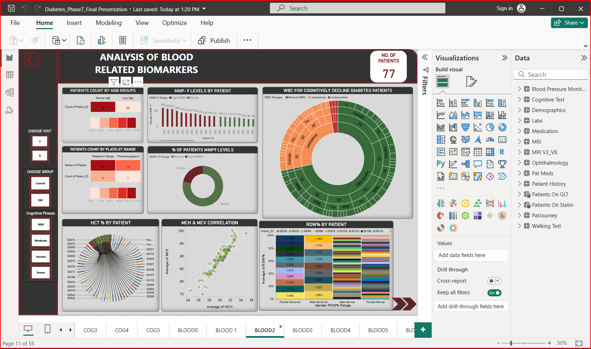
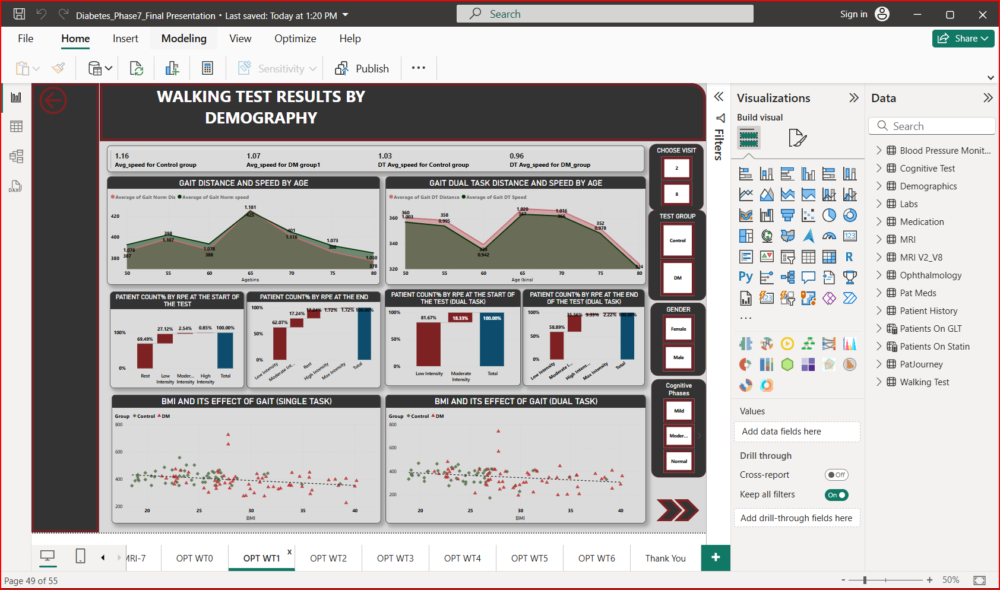

Blood related biomarkers and Gait Analysis
Project Overview
A prospective observational study of 77 participants was carried out to evaluate the effects of type 2 diabetes mellitus for people between the age group of 50- 80 years considering four different races, White, African American, Latino, and Asian. The participants with diabetes were grouped DM and the rest into a control group. The study involved two visits, visit 2 which is a baseline visit and visit 8, two-year follow-up.
Data Analysis
-

1. WBC (white blood cell count):In this analysis we considered patients who have moderate and severe congnitive decline DM patients and found that 14.63% patients have Leukopenia and 4.88% have Leukocytosis,
2. Both leukopenia and leukocytosis may be associated with a higher risk of stroke.
3. MMP-9 (ng/mL) :Out of the recorded values 42.86% patients have elevated MMP9 which indicates high risk of Alzheimer's disease and other neurodegenerative disorders.
4. Platelet count: thrombocytopenia may increase the risk of bleeding and (thrombocytosis) may increase the risk of blood clots which indicates higher risk of stroke.
5. Low Hct% and Hgb and RBC (anemia): Anemia can worsen cognitive function and increase the risk of stroke and other cardiovascular events.
"There is a strong correlation between MCV and MCH as they are measures of red blood cell size and volume. the higher the MCV and MCH levels, the greater the risk of developing Alzheimer's disease.
Patients with diabetes with cognitive decline had significantly higher levels than patients with diabetes without cognitive decline.
RDW% 8.12% female patients and 13.02% male patients have abnormal RDW% ranges.
A high RDW% may be a sign of an inflammatory condition or anemia which indicates a more severe form of cognitive decline.

1. People with diabetes are more likely to experience problems with thinking, vision and walking slowly due to subcortical frontal dysfunction.
2. A person’s walking mannerism is the reference to his physical health. Our Dataset is about a 6 min walking test conducted on day 2 of visit 2 and 8 on both groups.
3. Patients with DM had significantly shorter walking distances and slower walking speeds than Control patients.
4. The average speeds of control patients during normal and Dual Task walking tests are slightly more than DM patients in Visit 2.But the DM patients in visit 8 who have taken proper care with medication and diet have shown improved performance and have significantly the same walking speed compared to Control patients.
5. The difference in walking speed between the two groups was greatest among the patients in(age 50-55) and the oldest patients (age 75+). This suggests that Cerebral Microvascular disease(CVD) may have a greater impact on mobility in patients at the extremes of the age spectrum.
6. Female patients with diabetes and CVD have shorter gait distances and slower gait speeds than male patients. This suggests that females may be more susceptible to the mobility-impairing effects.
7. The Rating of Perceived Exertion (RPE) is a useful tool to monitor exercise intensity in elderly individuals with diabetes
8. The study found that max no.of DM patients have exerted Moderate intensity during start of the task and by the end of task RPE level ranged from 6 to 7(i.e.,more than 20% exerted moderate intensity and 5.26% exerted maximum intensity)to complete the task
9. When participants were asked to perform a cognitive task while exercising,it is observed that significant increase in patients count% exerting more intensity by end of the dual task
10. The majority of patients in the DM group were overweight or obese.
In the analysis of correlation between BMI and Gait distance covered by both groups,the distance covered is comparatively less as the BMI increases.